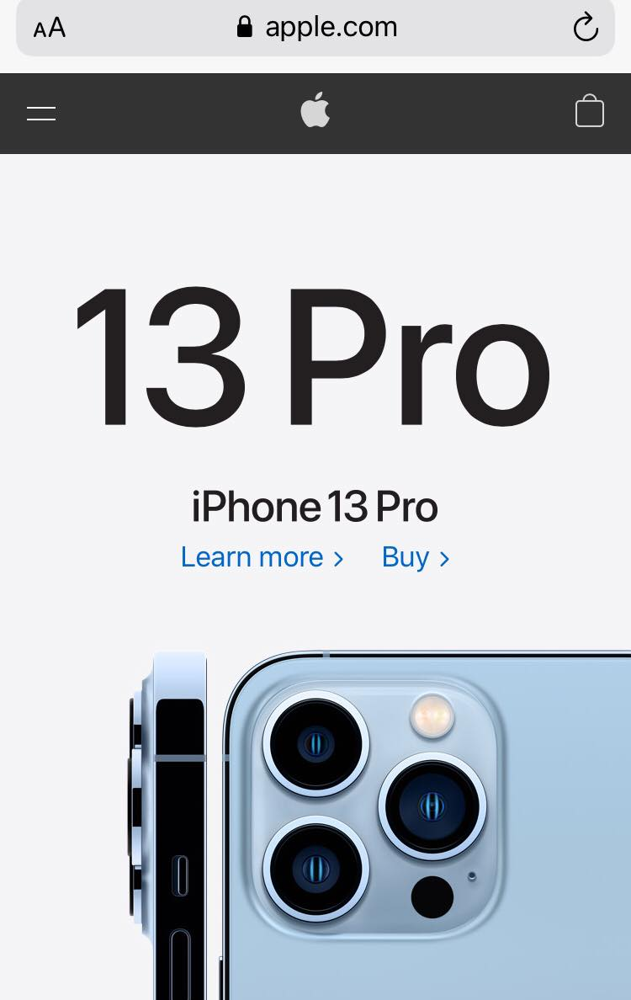

Apple
Apple.com

Apple.com
Apple shows an excellent example on how to work with white space. The design is very clean and it's easy for the user to see what the company presents. In this instance, the company uses this principle to be as clear as they can on the new product they are trying to sell. This principle, also, works well with contrast because when the developer uses white space - it's more simple to add a contrasting image and such.